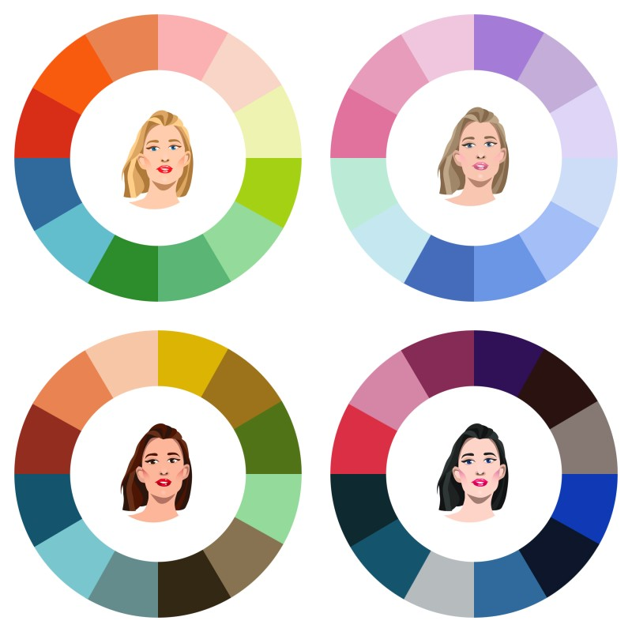

<!DOCTYPE html>
<html lang="en">
<!-- 첫 페이지 -->
<!--웹 사이트 상단. 로고, 내비게이션 링크 포함-->

<head>
  <meta charset="utf-8" />
  <meta name="viewport" content="width=device-width, initial-scale=1, shrink-to-fit=no" />
  <meta name="description" content="" />
  <meta name="author" content="" />
  <title>Beauty Planet</title>
  <link rel="stylesheet" href="https://stackpath.bootstrapcdn.com/bootstrap/4.3.1/css/bootstrap.min.css">
  <script src="javascript.js" defer></script>

  <!-- Font Awesome icons (free version)-->
  <script src="https://use.fontawesome.com/releases/v6.3.0/js/all.js" crossorigin="anonymous"></script>

  <!-- Google fonts-->
  <link href="https://fonts.googleapis.com/css?family=Montserrat:400,700" rel="stylesheet" type="text/css" />
  <link href="https://fonts.googleapis.com/css?family=Lato:400,700,400italic,700italic" rel="stylesheet"
    type="text/css" />

  <!-- Core theme CSS (includes Bootstrap)-->
  <link href="css/styles.css" rel="stylesheet" />
</head>

<body>
  <div id="root"></div>
</body>

<body id="page-top">
  <!-- Navigation-->
  <nav class="navbar navbar-expand-lg bg-beige text-uppercase fixed-top" id="mainNav">
    <div class="container bg-highlight">
      <a class="navbar-brand text-black mr-auto" href="index.html" style="margin-right: auto !important;">Beauty
        Planet</a>
      <style>
        .navbar-brand {
          margin-right: auto;
          /* Beauty Planet 로고를 왼쪽 끝으로 이동 */
        }

        .bg-beige {
          background-color: #ffb6c1;
        }

        .navbar-brand {
          color: black;
          /* 왼쪽 상단 글씨 검정색으로 변경 */
        }
      </style>


      <button class="navbar-toggler text-uppercase font-weight-bold bg-white text-black rounded" type="button"
        data-bs-toggle="collapse" data-bs-target="#navbarResponsive" aria-controls="navbarResponsive"
        aria-expanded="false" aria-label="Toggle navigation">
        Menu
        <i class="fas fa-bars"></i>
      </button>
      <div class="collapse navbar-collapse" id="navbarResponsive">
        <ul class="navbar-nav ms-auto">
          <style>
            .navbar-nav .nav-link {
              color: black !important;
              /* 검정색으로 변경 */
            }

            .navbar-nav .nav-link.active {
              background-color: white;
              /* 클릭된 메뉴 항목의 배경색을 베이지로 변경 */
            }
          </style>

          <!--첫 페이지 상단바-->
          <!--메뉴를 눌렀을때 해당하는 페이지로 이동-->
          <li class="nav-item mx-0 mx-lg-1">
            <a class="nav-link py-3 px-0 px-lg-3 rounded" href="index2.html" style="font-size: 15px">수정본</a>
          </li>
          <li class="nav-item mx-0 mx-lg-1">
            <a class="nav-link py-3 px-0 px-lg-3 rounded" href="home.html" style="font-size: 15px">Home</a>
          </li>
          <li class="nav-item mx-0 mx-lg-1">
            <a class="nav-link py-3 px-0 px-lg-3 rounded" href="Preview.html" style="font-size: 15px">Preview</a>

          </li>
          <li class="nav-item mx-0 mx-lg-1">
            <a class="nav-link py-3 px-0 px-lg-3 rounded" href="Virtual Makeup.html" style="font-size: 15px">Virtual
              Makeup</a>

          </li>
          <li class="nav-item mx-0 mx-lg-1">
            <a class="nav-link py-3 px-0 px-lg-3 rounded" href="Personal Color Diagnosis.html"
              style="font-size: 15px">Personal
              Color Diagnosis</a>
          </li>
          <li class="nav-item mx-0 mx-lg-1">
            <a class="nav-link py-3 px-0 px-lg-3 rounded" href="Color Type Explanation.html"
              style="font-size: 15px">Color Type
              Explanation</a>
          </li>
          <li class="nav-item mx-0 mx-lg-1">
            <a class="nav-link py-3 px-0 px-lg-3 rounded" href="Reviews.html" style="font-size: 15px">Reviews</a>
          </li>
        </ul>
      </div>
    </div>
  </nav>

  <!-- 첫 페이지: 웹 사이트의 주요 콘텐츠를 강조하는 섹션. 주요 제목, 부제목 포함-->
  <header class="masthead bg-highlight text-black text-center">
    <div class="container d-flex align-items-center flex-column">
      <!-- 제목 Heading-->
      <h1 class="masthead-heading text-uppercase mb-0"><strong>Beauty Planet</strong> </h1><br>

      <style>
        .btn-active {
          border: 2px solid black;
          /* 두께는 필요에 따라 조정하세요 */
        }

        .masthead-heading {
          margin-top: 100px;
          /* 제목을 아래로 50px 이동 */
        }

        .masthead img {
          margin-bottom: 50px;
          /* 그림을 아래로 30px 이동 */
        }

        #thankYouBtn {
          margin-bottom: 100px;
          /* 버튼을 아래로 50px 이동 */
        }

        .btn-container {
          margin-top: -20px;
          /* 원하는 만큼 위로 이동시킴 */
        }
      </style>
      <div class="text-center">
        
      </div>
  </header>
  <script>
    document.getElementById('startButton').addEventListener('click', function () {
      this.classList.add('btn-active');
    });

    document.getElementById('laterButton').addEventListener('click', function () {
      this.classList.add('btn-active');
    });
  </script>

  <div class="center-content text-center">
    <div class="btn-container"></div>
    <!-- 시작하기 Button: HOME 페이지로 이동 -->
    <a class="btn btn-white btn-lg mb-4" href="home.html"
      style="font-size: 20px; background-color: #ffb6c1; color: #000;">시작하기</a><br>

    <!-- 다음에 이용할게요 Button -->
    <a class="btn btn-beige btn-sm mb-4" href="#" style="font-size: 20px; background-color: #ffb6c1; color: #000;"
      id="thankYouBtn">다음에 이용할게요</a>
  </div>

  <script>
    document.getElementById('thankYouBtn').addEventListener('click', function () {
      alert('감사합니다');
    });
  </script>


  <!-- Footer: 웹 사이트 하단. 위치 정보, 소셜 미디어 링크 및 관련 사이트 정보-->
  <footer class="footer text-center">
    <div class="container">
      <div class="row">
        <!-- Footer Location-->
        <style>
          .center {
            display: flex;
            justify-content: center;
            align-items: center;
            margin-top: auto;
            margin-bottom: auto;
          }

          /* "소프트웨어&서비스 컴퓨팅 전공"이 한 줄에 나오도록 설정 */
          .container h4 {
            white-space: nowrap;
            font-size: 10px;
            /* 폰트 크기를 10px로 설정 */
          }

          /* 리스트 아이템의 폰트 크기를 10px로 설정 */
          ul {
            font-size: 10px;
          }

          ul.centered-list {
            list-style-type: none;
            /* 리스트 아이템 앞의 기본 점 제거 */
            padding: 0;
            /* 기본 패딩 제거 */
            margin: 0;
            /* 기본 마진 제거 */
            display: flex;
            flex-direction: column;
            /* 리스트 아이템을 세로로 나열 */
            align-items: center;
            /* 리스트 아이템을 가운데 정렬 */
          }

          li {
            margin-bottom: 5px;
            /* 각 리스트 아이템 간의 간격 설정 */
          }
        </style>
        <div class="container center">
          <div class="col-lg-4 mb-5 mb-lg-0">
            <h4 class="text-uppercase mb-4">컴퓨터응용수학부<br> 소프트웨어&서비스 컴퓨팅 전공</h4>
            <div class="btn-container">
              <p class="lead mb-0">
              <ul class="centered-list">
                <li>2020500064 이수연</li>
                <li>2020700101 배유빈</li>
                <li>2020810075 최지연</li>
              </ul>
              </ul>
              </p>
            </div>

          </div>
        </div>
      </div>
  </footer>
</body>

</html>